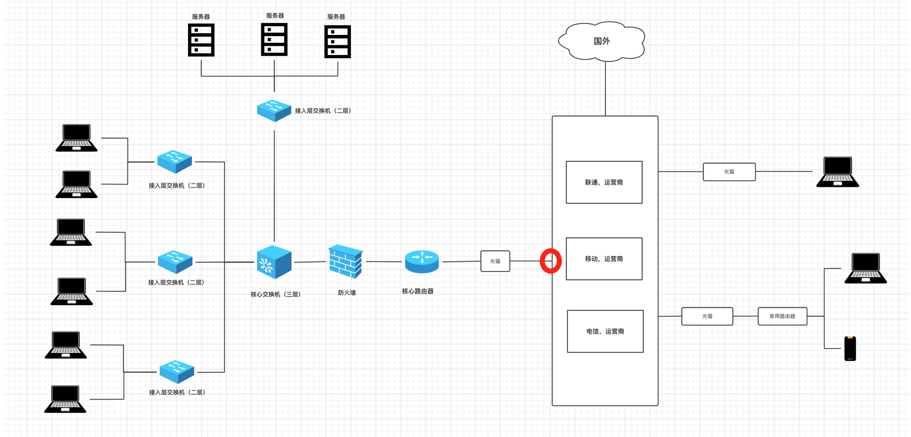
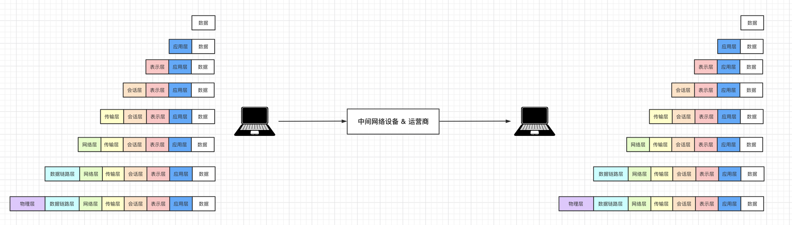
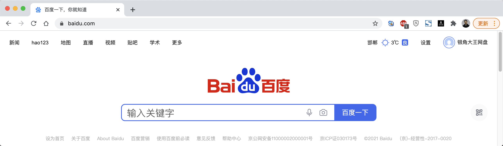
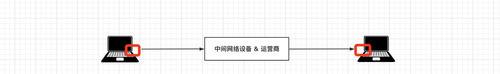
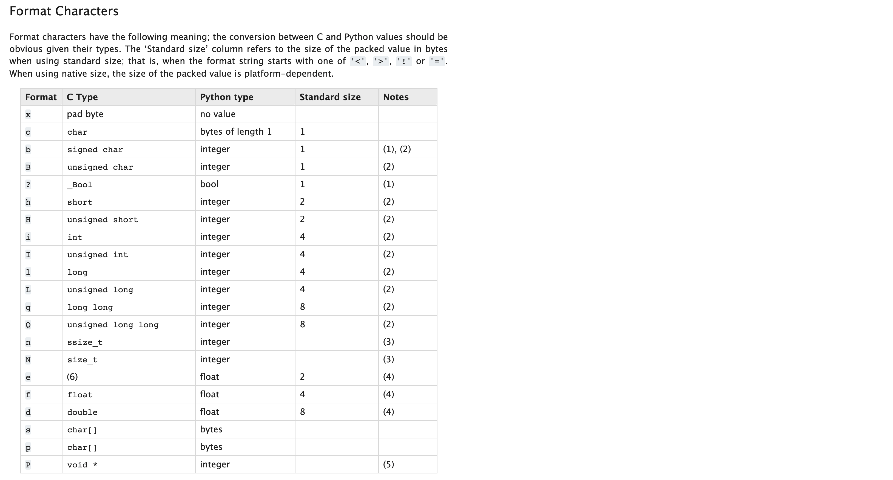
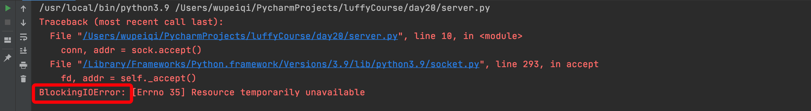
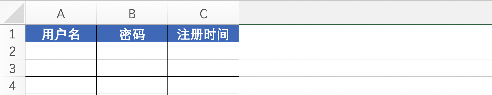

day21 网络编程（下）¶
课程目标：学会网络编程开发的必备知识点。
今日概要：
- OSI7 层模型
- TCP和UDP
- 粘包
- 阻塞和非阻塞
- IO多路复用
1. OSI 7层模型¶


OSI的7层模型对于大家来说可能不太好理解，所以我们通过一个案例来讲解：

假设，你在浏览器上输入了一些关键字，内部通过DNS找到对应的IP后，再发送数据时内部会做如下的事：
- 应用层：规定数据的格式。
- 表示层：对应用层数据的编码、压缩（解压缩）、分块、加密（解密）等任务。
- 会话层：负责与目标建立、中断连接。
- 传输层：建立端口到端口的通信，其实就确定双方的端口信息。
- 网络层：标记目标IP信息（IP协议层）
数据："GET /s?wd=你好 HTTP/1.1\r\nHost:www.baidu.com\r\n\r\n你好".encode('utf-8')
端口：
- 目标：80
- 本地：6784
IP：
- 目标IP：110.242.68.3（百度）
- 本地IP：192.168.10.1
- 数据链路层：对数据进行分组并设置源和目标mac地址
数据："POST /s?wd=你好 HTTP/1.1\r\nHost:www.baidu.com\r\n\r\n你好".encode('utf-8')
端口：
- 目标：80
- 本地：6784
IP：
- 目标IP：110.242.68.3（百度）
- 本地IP：192.168.10.1
MAC：
- 目标MAC：FF-FF-FF-FF-FF-FF
- 本机MAC：11-9d-d8-1a-dd-cd
- 物理层：将二进制数据在物理媒体上传输。
每一层各司其职，最终保证数据呈现在到用户手中。
简单的可以理解为发快递：将数据外面套了7个箱子，最终用户收到箱子时需要打开7个箱子才能拿到数据。而在运输的过程中有些箱子是会被拆开并替换的，例如：
最终运送目标：上海 ~ 北京（中途可能需要中转站），在中转站会会打开箱子查看信息，在进行转发。
- 对于二级中转站（二层交换机）：拆开数据链路层的箱子，查看mac地址信息。
- 对于三级中转站（路由器或三层交换机）：拆开网络层的箱子，查看IP信息。
在开发过程中其实只能体现：应用层、表示层、会话层、传输层，其他层的处理都是在网络设备中自动完成的。
import socket
client = socket.socket(socket.AF_INET, socket.SOCK_STREAM)
client.connect(('110.242.68.3', 80)) # 向服务端发送了数据包
key = "你好"
# 应用层
content = "GET /s?wd={} http1.1\r\nHost:www.baidu.com\r\n\r\n".format(key)
# 表示层
content = content.encode("utf-8")
client.sendall(content)
result = client.recv(8196)
print(result.decode('utf-8'))
# 会话层 & 传输层
client.close()
2. UDP和TCP协议¶
协议，其实就是规定 连接、收发数据的一些规定。
在OSI的 传输层 除了定义端口信息以外，常见的还可以指定UDP或TCP的协议，协议不同连接和传输数据的细节也会不同。
- UDP（User Data Protocol）用户数据报协议， 是⼀个⽆连接的简单的⾯向数据报的传输层协议。 UDP不提供可靠性， 它只是把应⽤程序传给IP层的数据报发送出去， 但是并不能保证它们能到达⽬的地。 由于UDP在传输数据报前不⽤在客户和服务器之间建⽴⼀个连接， 且没有超时重发等机制， 故⽽传输速度很快。
- TCP（Transmission Control Protocol，传输控制协议）是面向连接的协议，也就是说，在收发数据前，必须和对方建立可靠的连接，然后再进行收发数据。
2.1 UDP和TCP 示例代码¶
UDP示例如下：
- 服务端
import socket
server = socket.socket(socket.AF_INET, socket.SOCK_DGRAM)
server.bind(('127.0.0.1', 8002))
while True:
data, (host, port) = server.recvfrom(1024) # 阻塞
print(data, host, port)
server.sendto("好的".encode('utf-8'), (host, port))
- 客户端
import socket
client = socket.socket(socket.AF_INET, socket.SOCK_DGRAM)
while True:
text = input("请输入要发送的内容：")
if text.upper() == 'Q':
break
client.sendto(text.encode('utf-8'), ('127.0.0.1', 8002))
data, (host, port) = client.recvfrom(1024)
print(data.decode('utf-8'))
client.close()
TCP示例如下：
- 服务端
import socket
# 1.监听本机的IP和端口
sock = socket.socket(socket.AF_INET, socket.SOCK_STREAM)
sock.bind(('127.0.0.1', 8001))
sock.listen(5)
while True:
# 2.等待，有人来连接（阻塞）
conn, addr = sock.accept()
# 3.等待，连接者发送消息（阻塞）
client_data = conn.recv(1024)
print(client_data)
# 4.给连接者回复消息
conn.sendall(b"hello world")
# 5.关闭连接
conn.close()
# 6.停止服务端程序
sock.close()
- 客户端
import socket
# 1. 向指定IP发送连接请求
client = socket.socket()
client.connect(('127.0.0.1', 8001))
# 2. 连接成功之后，发送消息
client.sendall(b'hello')
# 3. 等待，消息的回复（阻塞）
reply = client.recv(1024)
print(reply)
# 4. 关闭连接
client.close()
2.2 TCP三次握手和四次挥手¶
这是一个常见的面试题。
0 1 2 3
0 1 2 3 4 5 6 7 8 9 0 1 2 3 4 5 6 7 8 9 0 1 2 3 4 5 6 7 8 9 0 1
+-+-+-+-+-+-+-+-+-+-+-+-+-+-+-+-+-+-+-+-+-+-+-+-+-+-+-+-+-+-+-+-+
| Source Port | Destination Port |
+-+-+-+-+-+-+-+-+-+-+-+-+-+-+-+-+-+-+-+-+-+-+-+-+-+-+-+-+-+-+-+-+
| Sequence Number |
+-+-+-+-+-+-+-+-+-+-+-+-+-+-+-+-+-+-+-+-+-+-+-+-+-+-+-+-+-+-+-+-+
| Acknowledgment Number |
+-+-+-+-+-+-+-+-+-+-+-+-+-+-+-+-+-+-+-+-+-+-+-+-+-+-+-+-+-+-+-+-+
| Data | |U|A|P|R|S|F| |
| Offset| Reserved |R|C|S|S|Y|I| Window |
| | |G|K|H|T|N|N| |
+-+-+-+-+-+-+-+-+-+-+-+-+-+-+-+-+-+-+-+-+-+-+-+-+-+-+-+-+-+-+-+-+
| Checksum | Urgent Pointer |
+-+-+-+-+-+-+-+-+-+-+-+-+-+-+-+-+-+-+-+-+-+-+-+-+-+-+-+-+-+-+-+-+
| Options | Padding |
+-+-+-+-+-+-+-+-+-+-+-+-+-+-+-+-+-+-+-+-+-+-+-+-+-+-+-+-+-+-+-+-+
| data |
+-+-+-+-+-+-+-+-+-+-+-+-+-+-+-+-+-+-+-+-+-+-+-+-+-+-+-+-+-+-+-+-+
网络中的双方想要基于TCP连接进行通信，必须要经过：
- 创建连接，客户端和服务端要进行三次握手。
# 服务端
import socket
sock = socket.socket(socket.AF_INET, socket.SOCK_STREAM)
sock.bind(('127.0.0.1', 8001))
sock.listen(5)
while True:
conn, addr = sock.accept() # 等待客户端连接
...
客户端 服务端
1. SYN-SENT --> <seq=100><CTL=SYN> --> SYN-RECEIVED
2. ESTABLISHED <-- <seq=300><ack=101><CTL=SYN,ACK> <-- SYN-RECEIVED
3. ESTABLISHED --> <seq=101><ack=301><CTL=ACK> --> ESTABLISHED
At this point, both the client and server have received an acknowledgment of the connection. The steps 1, 2 establish the connection parameter (sequence number) for one direction and it is acknowledged. The steps 2, 3 establish the connection parameter (sequence number) for the other direction and it is acknowledged. With these, a full-duplex communication is established.
- 传输数据
- 关闭连接，客户端和服务端要进行4次挥手。
import socket
sock = socket.socket(socket.AF_INET, socket.SOCK_STREAM)
sock.bind(('127.0.0.1', 8001))
sock.listen(5)
while True:
conn, addr = sock.accept()
...
conn.close() # 关闭连接
sock.close()
import socket
client = socket.socket()
client.connect(('127.0.0.1', 8001))
...
client.close() # 关闭连接
TCP A TCP B
1. FIN-WAIT-1 --> <seq=100><ack=300><CTL=FIN,ACK> --> CLOSE-WAIT
2. FIN-WAIT-2 <-- <seq=300><ack=101><CTL=ACK> <-- CLOSE-WAIT
3. TIME-WAIT <-- <seq=300><ack=101><CTL=FIN,ACK> <-- LAST-ACK
4. TIME-WAIT --> <seq=101><ack=301><CTL=ACK> --> CLOSED
3. 粘包¶

两台电脑在进行收发数据时，其实不是直接将数据传输给对方。
- 对于发送者，执行
sendall/send发送消息时，是将数据先发送至自己网卡的 写缓冲区(write buffer) ，再由缓冲区将数据发送给到对方网卡的读缓冲区(read buffer)。 - 对于接受者，执行
recv接收消息时，是从自己网卡的读缓冲区(read buffer)获取数据。
所以，如果发送者连续快速的发送了2条信息，接收者在读取时会认为这是1条信息，即：2个数据包粘在了一起。例如：
# socket客户端（发送者）
import socket
client = socket.socket()
client.connect(('127.0.0.1', 8001))
client.sendall('alex正在吃'.encode('utf-8'))
client.sendall('翔'.encode('utf-8'))
client.close()
# socket服务端（接收者）
import socket
sock = socket.socket(socket.AF_INET, socket.SOCK_STREAM)
sock.bind(('127.0.0.1', 8001))
sock.listen(5)
conn, addr = sock.accept()
client_data = conn.recv(1024)
print(client_data.decode('utf-8'))
conn.close()
sock.close()
如何解决粘包的问题？
每次发送的消息时，都将消息划分为 头部（固定字节长度） 和 数据 两部分。例如：头部，用4个字节表示后面数据的长度。
- 发送数据，先发送数据的长度，再发送数据（或拼接起来再发送）。
- 接收数据，先读4个字节就可以知道自己这个数据包中的数据长度，再根据长度读取到数据。
对于头部需要一个数字并固定为4个字节，这个功能可以借助python的struct包来实现：
import struct # ########### 数值转换为固定4个字节，四个字节的范围 -2147483648 <= number <= 2147483647 ########### v1 = struct.pack('i', 199) print(v1) # b'\xc7\x00\x00\x00' for item in v1: print(item, bin(item)) # ########### 4个字节转换为数字 ########### v2 = struct.unpack('i', v1) # v1= b'\xc7\x00\x00\x00' print(v2) # (199,)
示例代码：
- 服务端
import socket import struct sock = socket.socket(socket.AF_INET, socket.SOCK_STREAM) sock.bind(('127.0.0.1', 8001)) sock.listen(5) conn, addr = sock.accept() # 固定读取4字节 header1 = conn.recv(4) data_length1 = struct.unpack('i', header1)[0] # 数据字节长度 21 has_recv_len = 0 data1 = b"" while True: length = data_length1 - has_recv_len if length > 1024: lth = 1024 else: lth = length chunk = conn.recv(lth) # 可能一次收不完，自己可以计算长度再次使用recv收取，指导收完为止。 1024*8 = 8196 data1 += chunk has_recv_len += len(chunk) if has_recv_len == data_length1: break print(data1.decode('utf-8')) # 固定读取4字节 header2 = conn.recv(4) data_length2 = struct.unpack('i', header2)[0] # 数据字节长度 data2 = conn.recv(data_length2) # 取长度 print(data2.decode('utf-8')) conn.close() sock.close()
客户端
```python import socket import struct
client = socket.socket() client.connect(('127.0.0.1', 8001))
# 第一条数据 data1 = 'alex正在吃'.encode('utf-8')
header1 = struct.pack('i', len(data1))client.sendall(header1) #发送数据长度 client.sendall(data1) #发送数据
# 第二条数据 data2 = '翔'.encode('utf-8') header2 = struct.pack('i', len(data2)) client.sendall(header2) client.sendall(data2)
client.close()```
案例：消息 & 文件上传¶
- 服务端
import os
import json
import socket
import struct
# 从网卡的read buffer获取数据
def recv_data(conn, chunk_size=1024): #参数 连接对象，数据块大小
# 获取头部信息：数据长度
has_read_size = 0 #已经读取的数据大小
bytes_list = []
while has_read_size < 4: #保证获取头部4个字节数据
chunk = conn.recv(4 - has_read_size) #固定取4个字节，少多少取多少
has_read_size += len(chunk) #得到已经取得的数据大小
bytes_list.append(chunk)
header = b"".join(bytes_list) #获取的数据拼接起来
data_length = struct.unpack('i', header)[0] #数据解包 取得数据长度
# 获取数据
data_list = []
has_read_data_size = 0
while has_read_data_size < data_length: #刚好取得数据大小
size = chunk_size if (data_length - has_read_data_size) > chunk_size else data_length - has_read_data_size
chunk = conn.recv(size) #取数据
data_list.append(chunk) #放入数据列表里
has_read_data_size += len(chunk) #已经取得数据大小
data = b"".join(data_list) #拼接起来
return data
#从网卡的read buffer 获取文件
def recv_file(conn, save_file_name, chunk_size=1024): #参数 连接对象，数据块大小
save_file_path = os.path.join('files', save_file_name) #文件路径
# 获取头部信息：数据长度
has_read_size = 0 #已读取大小
bytes_list = []
while has_read_size < 4:
chunk = conn.recv(4 - has_read_size)
bytes_list.append(chunk)
has_read_size += len(chunk)
header = b"".join(bytes_list)
data_length = struct.unpack('i', header)[0] #解包获取数据长度
# 获取数据
file_object = open(save_file_path, mode='wb') #文件写对象
has_read_data_size = 0
while has_read_data_size < data_length:
size = chunk_size if (data_length - has_read_data_size) > chunk_size else data_length - has_read_data_size
chunk = conn.recv(size) #取数据
file_object.write(chunk) #写入
file_object.flush() #刷进硬盘
has_read_data_size += len(chunk) #已经读取大小。
file_object.close()
def run():
sock = socket.socket(socket.AF_INET, socket.SOCK_STREAM)
# IP可复用 #ip重复用
sock.setsockopt(socket.SOL_SOCKET, socket.SO_REUSEADDR, 1)
sock.bind(('127.0.0.1', 8001)) # 开通服务 端口
sock.listen(5) #可监听5个客户端
while True:
conn, addr = sock.accept() #接收对象 conn
while True:
# 获取消息类型
message_type = recv_data(conn).decode('utf-8') #调用接收数据方法
if message_type == 'close': # 四次挥手，空内容。
print("关闭连接")
break
# 文件：{'msg_type':'file', 'file_name':"xxxx.xx" }
# 消息：{'msg_type':'msg'}
message_type_info = json.loads(message_type) #反序列化
if message_type_info['msg_type'] == 'msg':
data = recv_data(conn) #调用接收数据方法
print("接收到消息：", data.decode('utf-8'))
else:
file_name = message_type_info['file_name']
print("接收到文件，要保存到：", file_name)
recv_file(conn, file_name) #调用接收文件方法
conn.close()
sock.close()
if __name__ == '__main__':
run()
- 客户端
import os
import json
import socket
import struct
#发送数据方法
def send_data(conn, content): #参数 连接对象，内容
data = content.encode('utf-8') #编码
header = struct.pack('i', len(data)) #结构化数据大小 得到4字节
conn.sendall(header) #发送文件头 标记文件大小
conn.sendall(data) #发送内容
#发送文件方法
def send_file(conn, file_path): #参数 连接对象，文件路径
file_size = os.stat(file_path).st_size #获取文件大小
header = struct.pack('i', file_size) #结构化数据文件大小
conn.sendall(header) #发送文件头 标记文件大小
has_send_size = 0 #已经发送文件大小
file_object = open(file_path, mode='rb')
while has_send_size < file_size:
chunk = file_object.read(2048)
conn.sendall(chunk)
has_send_size += len(chunk)
file_object.close()
def run():
client = socket.socket()
client.connect(('127.0.0.1', 8001))
while True:
"""
请发送消息，格式为：
- 消息：msg|你好呀
- 文件：file|xxxx.png
"""
content = input(">>>") # msg or file
if content.upper() == 'Q':
send_data(client, "close") #调用发送数据方法
break
input_text_list = content.split('|') #切分内容
if len(input_text_list) != 2:
print("格式错误，请重新输入")
continue
message_type, info = input_text_list # 文件类型，文件或消息
# 发消息
if message_type == 'msg':
# 发消息类型
send_data(client, json.dumps({"msg_type": "msg"})) #调用发送数据方法，发送消息内容
# 发内容
send_data(client, info)
# 发文件
else:
file_name = info.rsplit(os.sep, maxsplit=1)[-1] #os.sep 获得路径分隔符/ 从右边切割1次， 取最后的文件名
# 发消息类型
send_data(client, json.dumps({"msg_type": "file", 'file_name': file_name})) #发送文件夹类型 文件名
# 发内容
send_file(client, info)
client.close()
if __name__ == '__main__':
run()
4. 阻塞和非阻塞¶
默认情况下我们编写的网络编程的代码都是阻塞的（等待），阻塞主要体现在：
# ################### socket服务端（接收者）###################
import socket
sock = socket.socket(socket.AF_INET, socket.SOCK_STREAM)
sock.setsockopt(socket.SOL_SOCKET,socket.SO_REUSEADDR,1) #重复使用上次关闭的ip地址时候不会报错
sock.bind(('127.0.0.1', 8001))
sock.listen(5)
# 阻塞 (一直卡在这里等待客户端连接)
conn, addr = sock.accept()
# 阻塞
client_data = conn.recv(1024)
print(client_data.decode('utf-8'))
conn.close()
sock.close()
# ################### socket客户端（发送者） ###################
import socket
client = socket.socket()
# 阻塞
client.connect(('127.0.0.1', 8001))
client.sendall('alex正在吃翔'.encode('utf-8'))
client.close()
如果想要让代码变为非阻塞，需要这样写：
# ################### socket服务端（接收者）###################
import socket
sock = socket.socket(socket.AF_INET, socket.SOCK_STREAM)
sock.setsockopt(socket.SOL_SOCKET,socket.SO_REUSEADDR,1)
sock.setblocking(False) # 加上就变为了非阻塞
sock.bind(('127.0.0.1', 8001))
sock.listen(5)
# 非阻塞
conn, addr = sock.accept()
# 非阻塞
client_data = conn.recv(1024)
print(client_data.decode('utf-8'))
conn.close()
sock.close()
# ################### socket客户端（发送者） ###################
import socket
client = socket.socket()
client.setblocking(False) # 加上就变为了非阻塞
# 非阻塞
client.connect(('127.0.0.1', 8001))
client.sendall('alex正在吃翔'.encode('utf-8'))
client.close()

如果代码变成了非阻塞，程序运行时一旦遇到 accept、recv、connect 就会抛出 BlockingIOError 的异常。
这不是代码编写的有错误，而是原来的IO阻塞变为非阻塞之后，由于没有接收到相关的IO请求抛出的固定错误。
非阻塞的代码一般与IO多路复用结合，可以迸发出更大的作用。
5. IO多路复用¶
I/O多路复用指：通过一种机制，可以监视多个描述符，一旦某个描述符就绪（一般是读就绪或者写就绪），能够通知程序进行相应的读写操作。
IO多路复用 + 非阻塞，可以实现让TCP的服务端同时处理多个客户端的请求，例如：
# ################### socket服务端 ###################
import select
import socket
server = socket.socket(socket.AF_INET, socket.SOCK_STREAM)
server.setsockopt(socket.SOL_SOCKET,socket.SO_REUSEADDR,1)
server.setblocking(False) # 加上就变为了非阻塞
server.bind(('127.0.0.1', 8001))
server.listen(5)
inputs = [server, ] # socket对象列表 -> [server, 第一个客户端连接conn ]
while True:
# 当 参数1 序列中的socket对象发生可读时（accetp和read），则获取发生变化的对象并添加到 r列表中。
# r = []
# r = [server,]
# r = [第一个客户端连接conn,]
# r = [server,]
# r = [第一个客户端连接conn，第二个客户端连接conn]
# r = [第二个客户端连接conn,]
r, w, e = select.select(inputs, [], [], 0.05) #最多花0.05秒时间监测 inputs列表对象时候有连接发来
for sock in r:
# server
if sock == server:
conn, addr = sock.accept() # 接收新连接。
print("有新连接")
# conn.sendall()
# conn.recv("xx")
inputs.append(conn)
else:
data = sock.recv(1024)
if data:
print("收到消息：", data.decode("utf-8"))
else:
print("关闭连接")
inputs.remove(sock)
# 干点其他事 20s
"""
优点：
1. 干点那其他的事。
2. 让服务端支持多个客户端同时来连接。
"""
# ################### socket客户端 ###################
import socket
client = socket.socket()
# 阻塞
client.connect(('127.0.0.1', 8001))
while True:
content = input(">>>")
if content.upper() == 'Q':
break
client.sendall(content.encode('utf-8'))
client.close()
# ################### socket客户端 ###################
import socket
client = socket.socket()
# 阻塞
client.connect(('127.0.0.1', 8001))
while True:
content = input(">>>")
if content.upper() == 'Q':
break
client.sendall(content.encode('utf-8'))
client.close() # 与服务端断开连接（四次挥手），默认会想服务端发送空数据。
IO多路复用 + 非阻塞，可以实现让TCP的客户端同时发送多个请求，例如：去某个网站发送下载图片的请求。
import socket
import select
import uuid
import os
client_list = [] # socket对象列表
for i in range(5): # 5个对socket对象 非阻塞
client = socket.socket()
client.setblocking(False)
try:
# 连接百度，虽然有异常BlockingIOError，但向还是正常发送连接的请求
client.connect(('47.98.134.86', 80))
except BlockingIOError as e:
pass
client_list.append(client)
recv_list = [] # 放已连接成功，且已经把下载图片的请求发过去的socket
while True:
# w = [第一个socket对象,]
# r = [socket对象,]
r, w, e = select.select(recv_list, client_list, [], 0.1)
for sock in w:
# 连接成功，发送数据
# 下载图片的请求
sock.sendall(b"GET /nginx-logo.png HTTP/1.1\r\nHost:47.98.134.86\r\n\r\n")
recv_list.append(sock)
client_list.remove(sock)
for sock in r:
# 数据发送成功后，接收的返回值（图片）并写入到本地文件中
data = sock.recv(8196)
content = data.split(b'\r\n\r\n')[-1]
random_file_name = "{}.png".format(str(uuid.uuid4())) # 通过随机数来生成UUID. 使用的是伪随机数有一定的重复概率.
with open(os.path.join("images", random_file_name), mode='wb') as f:
f.write(content)
recv_list.remove(sock)
if not recv_list and not client_list:
break
"""
优点：
1. 可以伪造除并发的现象。
"""
基于 IO多路复用 + 非阻塞的特性，无论编写socket的服务端和客户端都可以提升性能。其中
- IO多路复用，监测socket对象是否有变化（是否连接成功？是否有数据到来等）。
- 非阻塞，socket的connect、recv过程不再等待。
注意：IO多路复用只能用来监听 IO对象 是否发生变化，常见的有：文件是否可读写、电脑终端设备输入和输出、网络请求（常见）。
在Linux操作系统化中 IO多路复用 有三种模式，分别是：select，poll，epoll。（windows 只支持select模式）
监测socket对象是否新连接到来 or 新数据到来。
select
select最早于1983年出现在4.2BSD中，它通过一个select()系统调用来监视多个文件描述符的数组，当select()返回后，该数组中就绪的文件描述符便会被内核修改标志位，使得进程可以获得这些文件描述符从而进行后续的读写操作。
select目前几乎在所有的平台上支持，其良好跨平台支持也是它的一个优点，事实上从现在看来，这也是它所剩不多的优点之一。
select的一个缺点在于单个进程能够监视的文件描述符的数量存在最大限制，在Linux上一般为1024，不过可以通过修改宏定义甚至重新编译内核的方式提升这一限制。
另外，select()所维护的存储大量文件描述符的数据结构，随着文件描述符数量的增大，其复制的开销也线性增长。同时，由于网络响应时间的延迟使得大量TCP连接处于非活跃状态，但调用select()会对所有socket进行一次线性扫描，所以这也浪费了一定的开销。
poll
poll在1986年诞生于System V Release 3，它和select在本质上没有多大差别，但是poll没有最大文件描述符数量的限制。
poll和select同样存在一个缺点就是，包含大量文件描述符的数组被整体复制于用户态和内核的地址空间之间，而不论这些文件描述符是否就绪，它的开销随着文件描述符数量的增加而线性增大。
另外，select()和poll()将就绪的文件描述符告诉进程后，如果进程没有对其进行IO操作，那么下次调用select()和poll()的时候将再次报告这些文件描述符，所以它们一般不会丢失就绪的消息，这种方式称为水平触发（Level Triggered）。
epoll
直到Linux2.6才出现了由内核直接支持的实现方法，那就是epoll，它几乎具备了之前所说的一切优点，被公认为Linux2.6下性能最好的多路I/O就绪通知方法。
epoll可以同时支持水平触发和边缘触发（Edge Triggered，只告诉进程哪些文件描述符刚刚变为就绪状态，它只说一遍，如果我们没有采取行动，那么它将不会再次告知，这种方式称为边缘触发），理论上边缘触发的性能要更高一些，但是代码实现相当复杂。
epoll同样只告知那些就绪的文件描述符，而且当我们调用epoll_wait()获得就绪文件描述符时，返回的不是实际的描述符，而是一个代表就绪描述符数量的值，你只需要去epoll指定的一个数组中依次取得相应数量的文件描述符即可，这里也使用了内存映射（mmap）技术，这样便彻底省掉了这些文件描述符在系统调用时复制的开销。
另一个本质的改进在于epoll采用基于事件的就绪通知方式。在select/poll中，进程只有在调用一定的方法后，内核才对所有监视的文件描述符进行扫描，而epoll事先通过epoll_ctl()来注册一个文件描述符，一旦基于某个文件描述符就绪时，内核会采用类似callback的回调机制，迅速激活这个文件描述符，当进程调用epoll_wait()时便得到通知。
补充：socket + 非阻塞+ IO多路复用（IO操作对象都可以监测 + 文件）。
总结¶
- OSI 7层模型
- UDP和TCP的区别
-
TCP的三次握手和四次挥手
-
为什么会有粘包？如何解决？
-
如何让socket请求变成非阻塞？
-
IO多路复用的作用？
- IO多路复用 + 非阻塞 + socket服务端，可以让服务端同时处理多个客户端的请求。
- IO多路复用 + 非阻塞 + socket客户端，可以向服务端同时发起多个请求。
作业（模块大作业）¶
请基于TCP协议实现一个网盘系统，包含客户端、服务端，各自需求如下：
-
客户端
-
用户注册，注册成功之后，在服务端的指定目录下为此用户创建一个文件夹，该文件夹下以后存储当前用户的数据（类似于网盘）。
-
用户登录
-
查看网盘目录下的所有文件（一级即可），ls命令
-
上传文件，如果网盘已存在则重新上传（覆盖）。
-
下载文件（进度条）
-
服务端
-
支持注册，并为用户初始化相关目录。

-
支持登录
-
支持查看当前用户网盘目录下的所有文件。
-
支持上传
-
支持下载
扩展 selectors 模块
selectors模块¶
selectors 已经把epoll、select封装好了，默认用epoll，如果机器上不支持epoll，比如window是不支持epoll，就用select。
#服务端
import selectors
import socket
sel = selectors.DefaultSelector()
def accept(sock, mask):
conn, addr = sock.accept() # 开始连接
print('accepted', conn, 'from', addr)
conn.setblocking(False) # 连接设为非阻塞模式
sel.register(conn, selectors.EVENT_READ, read) # 把conn注册到sel对象里
# 新连接回调read函数
def read(conn, mask):
data = conn.recv(1024) # 接收数据
if data:
print('echoing', repr(data), 'to', conn)
conn.send(data) # Hope it won't block
else:
print('closing', conn)
sel.unregister(conn) # 取消注册
conn.close()
sock = socket.socket()
sock.bind(('localhost', 9000))
sock.listen(100)
sock.setblocking(False)
sel.register(sock, selectors.EVENT_READ, accept) # 注册事件
# sock注册过来 新连接调用这个函数
while True:
events = sel.select() # 有可能调用epoll，也有可能调用select，看系统支持
# 默认是阻塞，有活动连接，就返回活动的列表
for key, mask in events:
callback = key.data # 掉accept函数
callback(key.fileobj, mask) # key.fileobj = 文件句柄 （相当于上个例子中检测的自己）
#https://blog.csdn.net/fgf00/article/details/52793739
IO多路复用 + 非阻塞，可以实现让TCP的客户端同时发送多个请求
###############################server
import socket
import select
server = socket.socket(socket.AF_INET, socket.SOCK_STREAM)
server.setblocking(False)
server.bind(("127.0.0.1", 8001))
server.listen(5)
inputs = [server]
while True:
r, w, e = select.select(inputs, [], [], 0.1)
for sock in r:
if sock == server:
conn, addr = sock.accept()
print('一个新的链接')
inputs.append(conn)
else:
data = sock.recv(1024)
if data:
print('收到消息: ', data.decode())
sock.sendall('张开'.encode())
else:
print('关闭链接')
inputs.remove(sock)
#####################################client
import socket
import select
client_list = [] # socket对象列表
for i in range(5): # 5个对socket对象 非阻塞
client = socket.socket()
client.setblocking(False)
try:
client.connect(('127.0.0.1', 8001))
except BlockingIOError as e:
pass
client_list.append(client)
recv_list = [] # 放已连接成功的socket对象
while True:
r, w, e = select.select(recv_list, client_list, [], 0.1)
for sock in w:
# 连接成功，请求获取用户名
sock.sendall("username".encode())
recv_list.append(sock)
client_list.remove(sock)
for sock in r:
# 将获取用户名的请求发送成功后，这里打印出server端的响应结果
data = sock.recv(8196)
print("接收到来自server端返回的用户名: ", data.decode())
if not recv_list and not client_list:
break